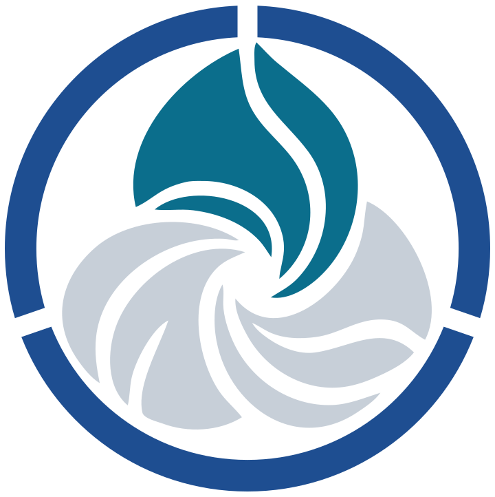
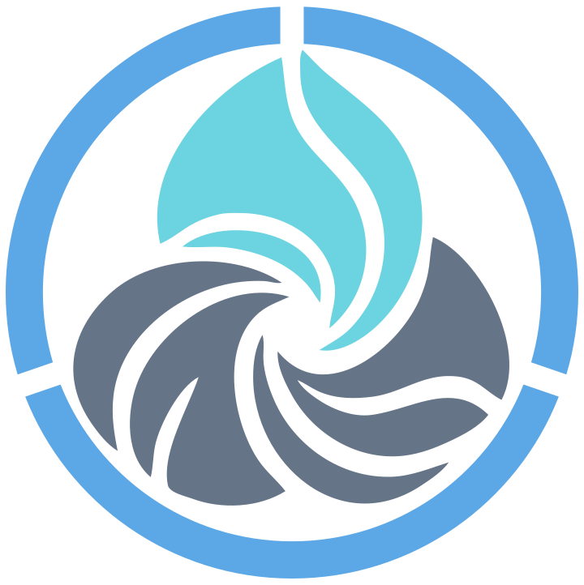
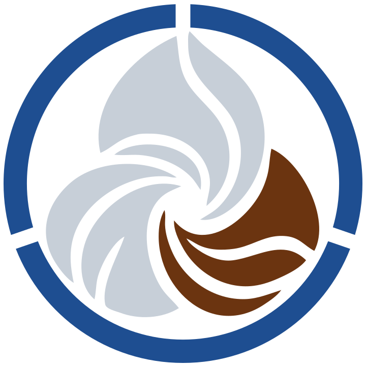
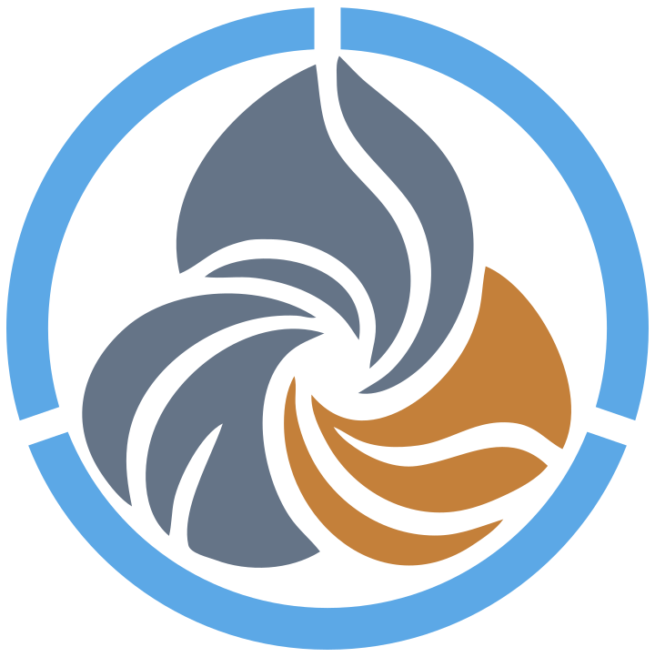
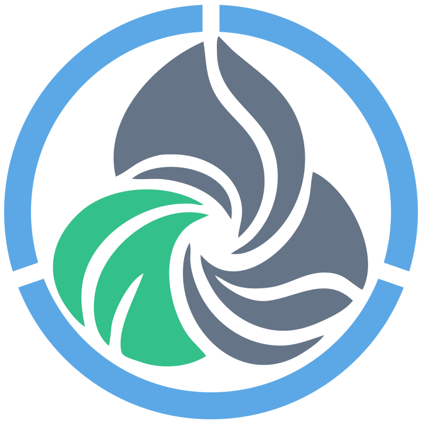
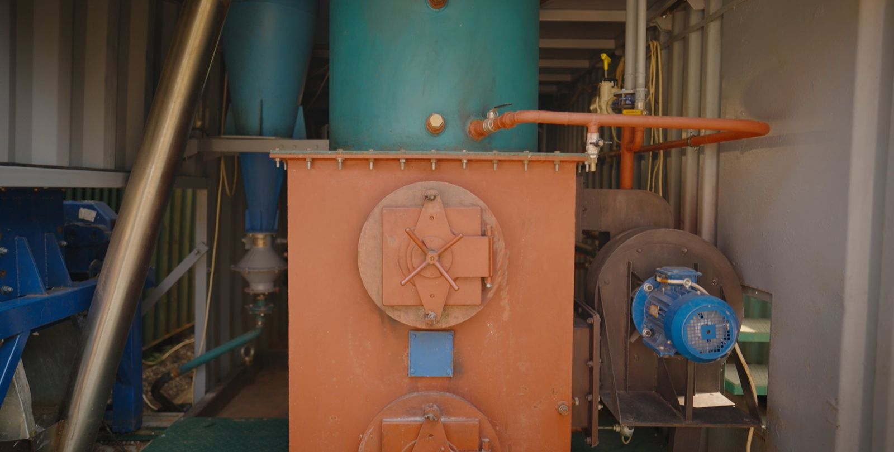

آبEcoFilter
تصفیهٔ ماژولار آب در محل: ازن تولیدشده در محل و میکروفیلتراسیون خودتمیزشونده.
آزمایش در تأسیسات در حال بهرهبرداری · TRL 7
بیشتر بدانیدECOTECH · آب · گرما · داده
سامانههای ماژولار برای تصفیهٔ آب و بازیابی گرما از پسماند. تجهیزات را در محل نصب میکنیم، عملکرد را با همکاری آزمایشگاه معتبر اندازهگیری میکنیم و تنها موارد اثباتشده را گسترش میدهیم.
اندازهگیریشدهپشتوانه: گزارشهای آزمایشگاهی
چالش جهانی
2.1 میلیارد
نفر در سال 2024 از خدمات آب آشامیدنی با مدیریت ایمن برخوردار نبودند
برنامهٔ پایش مشترک سازمان جهانی بهداشت و یونیسف برای آب، فاضلاب و بهداشت (JMP)، گزارش 26 اوت 2025
تأسیساتی که هرگز به عملکرد طراحیشده نرسد، مشکل را حل نمیکند — حتی اگر ساخته و پولش پرداخت شده باشد.
واحدهای صنعتی برای حمل پسماند پول میدهند و دوباره برای سوخت و گرما هزینه میکنند.
شاخصها، آزمایشگاه و نقاط اندازهگیری پیش از آغاز آزمایش توافق میشوند. داور، گزارش آزمایشگاه است نه برگهٔ مشخصات.
پلتفرم ECOTECH
هر راهکار به یک شیوه توصیف میشود: چه وارد میشود، چه خارج میشود، کجا اندازهگیری میشود و کدام سند آن را ثابت میکند. از این رو راهکارهای ما قابل مقایسه، ترکیب و گسترشاند.


آبتصفیهٔ ماژولار آب در محل: ازن تولیدشده در محل و میکروفیلتراسیون خودتمیزشونده.
آزمایش در تأسیسات در حال بهرهبرداری · TRL 7
بیشتر بدانید

گرما از پسماندواحد کانتینری RM-1 برای تولید گرما از پسماندهای کربندار واجد شرایط.
نمونهٔ اولیهٔ نیمهصنعتی · در حال آزمایش
بیشتر بدانید
سامانهٔ یکپارچهآب، گرما و دادهٔ یک سایت در یک سامانهٔ اندازهگیری واحد.
مفهوم طراحی
بیشتر بدانیدTRL (Technology Readiness Level) — سطح آمادگی فناوری در مقیاس 1 تا 9؛ ارزیابی شرکت.
EcoFilter · آب
واحد ماژولار در خط موجود نصب میشود. اکسیدکننده، ازن تولیدشده در محل است؛ المان فیلتر حین کار خود را تمیز میکند. پیکربندی پایه به تزریق پیوستهٔ مواد کلردار یا منعقدکننده نیاز ندارد.
ازن در محل تولید میشود — بدون اکسیدکنندهٔ وارداتی.
المان در حین کار تمیز میشود؛ آب شستوشوی معکوس اندازهگیری میشود.
فشار، دبی و شستوشو ثبت میشوند؛ حسگرها برای هر سایت انتخاب میشوند.
خط کنارگذر، تخلیه، نقاط نمونهبرداری و توقف اضطراری در طراحی پیشبینی شدهاند.

آهن، منگنز، کدورت و رنگ در آب زیرزمینی.
بار روی غشاها را کاهش میدهد — مکمل اسمز معکوس است، نه جایگزین آن.
آب فرایند متناسب با طرح هر کارخانه.
پالایش نهایی در نقطهٔ مصرف با پایش کلر باقیمانده پیش و پس از تصفیه.
تولید بر اساس مشخصات فنی TU 28.29.12-001-70473237-2025 · اظهارنامهٔ انطباق اتحادیهٔ اقتصادی اوراسیا N RU Д-RU.РА06.В.32770/25، معتبر تا 23 ژوئیه 2030
نتایج
نمونههای لحظهای برداشتهشده در سایت ECOTECH؛ آنالیزها توسط آزمایشگاههای معتبر انجام شده است. نتایج مربوط به همان نمونههای آزمایششده است.
پس از تصفیه، شاخصهای آزمایششده با استاندارد روسی آب آشامیدنی SanPiN 1.2.3685-21 مطابقت دارند.
منبع: گزارشهای Пц-3012-1/26 و Пц-3012-2/26 · مرکز تحلیلی کیفیت آب، گواهی اعتبار AAC «Analitika» شمارهٔ AAC.A.00109
پس از تصفیه، شاخصهای آزمایششده با SanPiN 1.2.3685-21 مطابقت دارند.
منبع: گزارشهای Пц-3372-1/25 و Пц-3372-2/25 · مرکز تحلیلی کیفیت آب، گواهی اعتبار AAC «Analitika» شمارهٔ AAC.A.00109
حدود گزارش مربوط به تخلیه به شبکهٔ فاضلاب شهری است (مصوبهٔ شمارهٔ 644 دولت روسیه).
منبع: گزارشهای شمارهٔ 5094 و 5095 · شرکت Lab24، اعتبارنامهٔ RA.RU.21AH50
اندازهگیریشده — مقداری که از گزارش آزمایشگاه معتبر یا خوانش دستگاه به دست آمده است. نتایج نمونههای لحظهای بهطور خودکار به آب دیگری تعمیم داده نمیشود: هر واحد بر اساس آنالیز آب خام همان سایت پیکربندی میشود.
EcoModule · گرما از پسماند
EcoModule RM-1 یک راکتور گردابی دمابالا در قالب کانتینر است که برای تولید گرمای گرمایشی و فرایندی از پسماندهای کربندار واجد شرایط طراحی شده است.
نمونهٔ اولیهٔ نیمهصنعتی کانتینری RM-1؛ در حال کار در سایت تحقیقاتی خود شرکت.
گزارش آزمون شمارهٔ ФТ0921ПИ-3/117 مورخ 30.09.2021: طراحی با مقررات فنی اتحادیهٔ گمرکی TR CU 010/2011 «ایمنی ماشینآلات و تجهیزات» مطابقت دارد.
TU 28.99.39-001-0107994046-2021؛ برگهٔ کاتالوگ مؤسسهٔ فدرال «RST» شمارهٔ 200/135957 مورخ 23.09.2021.



تفکیک و خردکردن.
تجزیهٔ کنترلشده در دمای بالا در راکتور گردابی.
انتقال گرما به سامانهٔ مشتری.
کنتورهای گرما و برق؛ گزارشهای انتشار و خاکستر باقیمانده.
مرحلهٔ بعد: آزمایش در سایت مشتری با اندازهگیری دستگاهی گرمای مفید.
طراحی راکتور، رژیمهای کاری و الگوریتمهای کنترل افشا نمیشوند.
EcoCycle · چشمانداز
EcoCycle، EcoFilter و EcoModule را با هم ترکیب میکند: آب خام و پسماند واجد شرایط وارد میشوند و آب تصفیهشده، گرمای مفید و دادهٔ اندازهگیری خارج میشوند. برای روستاها، سایتهای صنعتی و تأسیسات دورافتاده و مستقل از شبکه.
درون، پیچیده. بیرون، ساده.
ورودیها
سایت مشتری
خروجیها
آب شستوشو، خاکستر باقیمانده و گازهای خروجی جداگانه اندازهگیری میشوند
تصویرسازی مفهومی
مفهومنمودار مفهومی به سبک سامانهٔ طراحی ECOTECH؛ تصویر تأسیسات در حال کار نیست و طراحی واحدها را نشان نمیدهد.
تصفیهٔ آب و گرمای محلی برای یک سکونتگاه.
آب فرایند و گرما از پسماند خود کارخانه.
آب و گرما در محل — جایی که حمل سوخت و مواد شیمیایی گران است.
مفهوممرحله: مفهوم طراحی. گام نخست، اثبات جداگانهٔ EcoFilter و EcoModule در سایت مشتری است.
نمودار عملکردی؛ طراحی واحدها نشان داده نمیشود.
روش کار ما
ما وعده نمیفروشیم. آزمایشی در سایت شما با معیارهای تحویلِ از پیش توافقشده پیشنهاد میکنیم.
آنالیز آب یا ترکیب پسماند، نتایج هدف، مصرفکنندهٔ آب یا گرما.
نقاط اتصال، نقاط اندازهگیری، تأمین برق، دفع پسماند باقیمانده.
شاخصها، روشها، آزمایشگاه و مدت — پیش از آغاز کار.
8 تا 12 هفته کار پیوسته با مجموعهای از نمونهها که آزمایشگاه برمیدارد.
تنها پس از تأیید عملکرد به گسترش میپردازیم.
نتیجه تنها پس از اندازهگیری و صدور گزارش آزمایشگاه، اثباتشده به شمار میآید.
مخاطبان
آب فرایند و دیگ بخار، گرما از پسماند خودتان، هزینه بر پایهٔ بازدید سایت.
تأسیساتی که به عملکرد طراحیشده میرسند و بر پایهٔ اندازهگیری واقعی تحویل گرفته میشوند.
بلوغ راهکارها و دادهٔ راستیآزماییشده؛ اقتصاد پروژه پس از امضای توافقنامهٔ عدم افشا.
برای یکپارچهسازان و تأمینکنندگان اسمز معکوس — پیشتصفیه بهعنوان بخشی از راهکار شما.
همکاری بینالمللی
ما از راه یک پروژهٔ آزمایشی در سایتی مشخص وارد بازارهای تازه میشویم — با آزمایشگاه محلی و شریک محلی.
آزمایش روی آب یا پسماند منطقهٔ شما با معیارهای تحویل توافقشده.
نتایج را یک آزمایشگاه مستقل در کشور شریک تأیید میکند.
مونتاژ و خدمات قطعات غیرحساس همراه با شریک محلی.
توافقنامهٔ عدم افشا و قواعد حفاظت از مالکیت فکری پیش از انتقال هرگونه دادهٔ فنی.
مناطق اولویتدار: کشورهای بریکس، خاورمیانه، آسیا و آفریقا
اسناد و مالکیت فکری
EcoFilter · TR CU 010/2011 · معتبر از 25.07.2025 تا 23.07.2030
بررسی در سامانهٔ ثبتEcoFilter · فیلتر آب خودتمیزشونده «ECOFILTER»
EcoFilter · آب چاه، آب سطحی، فاضلاب خانگی · در صورت درخواست
EcoModule · احیاگر ماژولار برای پسماندهای کربندار · در صورت درخواست
گواهیهای تودیع (2019–2025) و نظر مقدماتی دربارهٔ ثبتپذیری اختراع، پدیدآورندگی و تقدم تاریخ را تأیید میکنند. جزئیات پس از امضای توافقنامهٔ عدم افشا ارائه میشود.
نقاط عطف
تودیع پژوهش کاربردی دربارهٔ ماژولهای زیستمحیطی احیای پسماند.
مشخصات فنی احیاگر ماژولار؛ آزمون نمونه برای انطباق با TR CU 010/2011.
ثبت شرکت ECOTECH.
تولید EcoFilter بر اساس مشخصات فنی و ثبت اظهارنامهٔ اوراسیا؛ گزارشهای آب سطحی و فاضلاب؛ آغاز به کار EcoModule RM-1.
گزارشهای آب چاه: پس از تصفیه، شاخصهای آزمایششده با SanPiN مطابقت دارند. EcoFilter به نیمهنهایی مسیر بریکس جام SU SONG راه یافت.
تماس
برای آب، آنالیز آب خام را پیوست کنید. برای پسماند، ترکیب آن و محل نیاز به گرما را شرح دهید. پاسخ ما فهرست دادههای لازم برای آزمایش خواهد بود.
ساختمان 5، شهرک مؤسسهٔ فیزیک جو (IFA RAN)، بخش اودینتسوو، استان مسکو، 143180، روسیه
ایوان تسوزیک (Ivan Tsozik)
درخواستها را به همهٔ زبانهای این وبسایت میپذیریم.